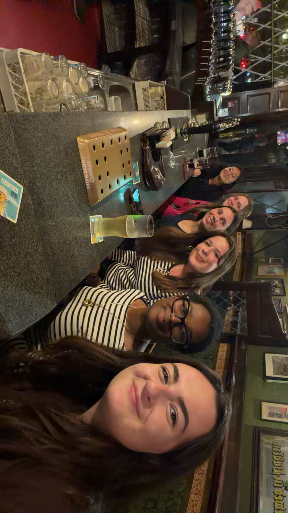
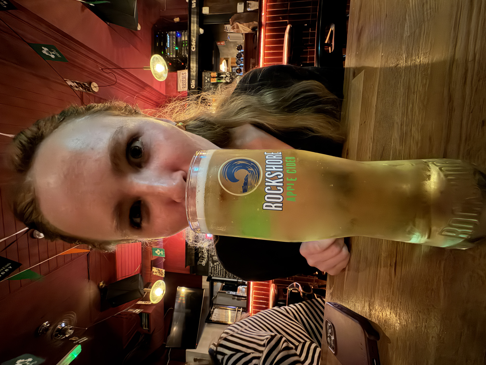
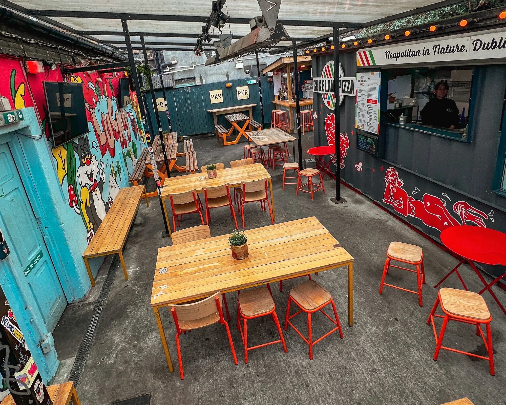
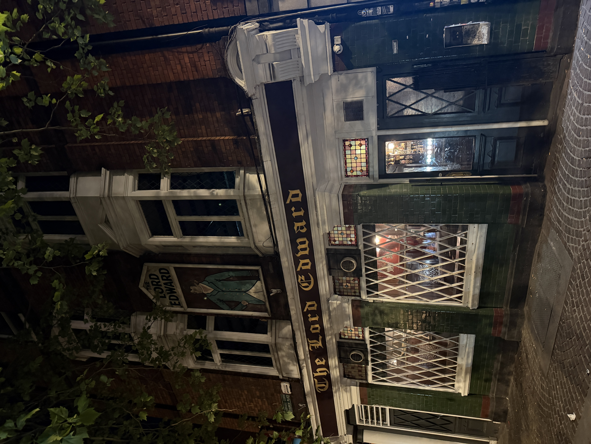

Pubs
Here's what I thought about the some of the pubs I went to in Ireland!
Lord Edward
This was the first pub I visited. It was recommended to us by our bus-tour guide. It was super convenient because it was right next to our hotel! The vibes were good!
I tried to order a snakebite (made with equal parts lager and cider), and the bartender told me it was illegal. Maybe because it's too good?

Darkey Kelly's
Great live music and a great pint! I went here on the night of my birthday and it was super chill.
Some ladies from Oregon made us dance with them for the last song of the night! We think they had one too many pints.
Dudley's
I went here twice and there was great live-music both times.
The first time, we sat in the main room with the band. It was really crowded but full of life! The second time, we got there pretty late and sat in the back room. It was a lot more chill!
We bought some peanuts for 2€ and they were the best peanuts of my life.

Teać Na Céibe
We stopped in here quick on our way home one night. The music was amazing, lots of 80s-rock. We didn't get any drinks but I'd totally go back for that music!
The drummer was going crazy on a box drum and it reminded me of when my brother and I used to have one of those!
Temple Bar
There's so many mixed opinions about Temple Bar. The locals tell you to never go but your TikTok tells you it's the most magical place in Dublin. My opinion is you should go once to say you have, and never go back again; it wasn't anything special.
They played a cover of Mr. Brightside and everyone was singing along!

Lucky's
This pub was reccomended to us by Seán, director of Academic Affairs at CEA Cappa. He told us it was a bit of a hippy-pub. They had a cool beer garden in the back with a pizza food truck!
There was so many cute puppies in the beer garden just laying under the tables!
The Quays
This was first pub we went to in Galway! A bunch of friends from the program were there and we were right up front for the great live music!
We were right up front by the band and got to hang out with Vivi who is studying abroad in Ireland from Italy!

The Kings Head
This was the second bar we went to in Galway. The live cover band was the biggest we saw all trip — two guitarists, a bassist, a drummer, and a keyboard player, with three of them singing too!
One of the cover-band singers was able to perfectly replicate Micheal Jackson's voice; it was actually crazy.